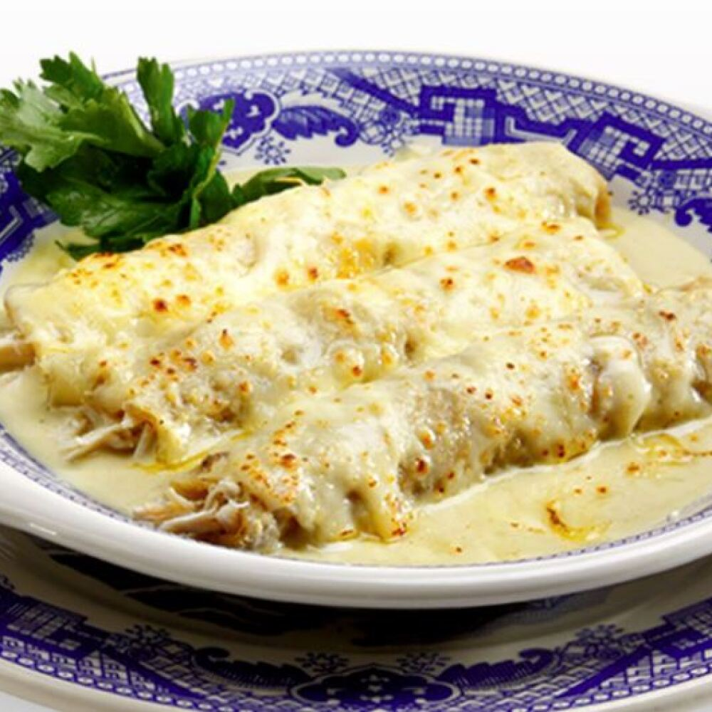

Enchiladas Suizas

Tasteful enchiladas Suizas
These enchiladas suizas are filled with chicken and cheese and have a nice bite, thanks to a creamy homemade salsa verde. They are equally delicious whether you make them with cooked pork or beef.
Ingredients
Salsa
- 2 tablespoons butter
- ⅔ cup chopped Spanish onion
- 2 tablespoons all-purpose flour
- 1 ½ cups chicken broth
- 1 cup chopped green chile peppers
- 1 clove garlic, minced
- ¾ teaspoon salt
- 1 pinch ground cumin
Enchiladas
- 1 cup shredded Monterey Jack cheese
- 1 cup shredded mild Cheddar cheese
- 12 (8 inch) corn tortillas
- 3 tablespoons canola oil for frying, or as needed
- 2 cups shredded, cooked chicken breast meat
Directions
- Make the salsa verde: Melt butter in a skillet over medium heat. Add onion and sauté until soft, about 5 minutes. Add flour and stir until fragrant, 1 to 2 minutes. Pour in broth, then add green chiles, garlic, salt, and cumin. Simmer until flavors have blended, about 15 minutes. Remove from the heat.
- Preheat the oven to 350 degrees F (175 degrees C.)
- Make the enchiladas: Mix Monterey Jack and Cheddar together in a bowl.
- Heat 1/4 inch oil in a heavy skillet over medium heat. Fry tortillas, one at a time, until blistering but still soft enough to roll, 10 to 20 seconds per side. Drain on paper towels.
- Dip both sides of each tortilla in salsa verde, then place onto a work surface. Place 2 heaping tablespoons chicken and about 2 tablespoons cheese mixture down the center and roll tortilla around fillings. Place, seam-side down, into a shallow baking dish. Repeat to fill and roll remaining tortillas.
- Spoon some salsa verde over enchiladas and pour in heavy cream. Sprinkle remaining cheese mixture over top and garnish with green onions.
- Bake, uncovered, in the preheated oven until sauce is bubbly and cheese is melted, about 20 minutes. Remove from the oven and garnish with olives and cherry tomatoes. Serve immediately with remaining salsa verde on the side.